Postdoctoral Scholar in Mechanical Engineering
Stanford University, Stanford, CA. Advisor: Prof. Ruike Renee Zhao, Soft Intelligent Materials Laboratory.
Stanford University | Soft Intelligent Materials Laboratory
I design programmable and sustainable polymer platforms that connect molecular design, waste-derived feedstocks, and composite processing to reconfigurable devices, active metamaterials, infrared optics, and energy systems.
About
I am a polymer materials scientist and postdoctoral scholar in Mechanical Engineering at Stanford University. My research sits at the boundary of soft robotics, polymer chemistry, sustainable materials, and device engineering.
During my Ph.D. training, I developed shape-reconfigurable liquid crystalline polymer systems, sulfur-rich optical and energy materials, and bio-derived composite processing strategies. These projects share a central idea: materials become more powerful when their chemistry, architecture, and processing history are designed together.
At Stanford, I build on this foundation to study electromagnetic-driven soft robots, active metamaterials, and polymer assembly mechanisms that translate external fields into useful motion and adaptive function.
Career Path
Stanford University, Stanford, CA. Advisor: Prof. Ruike Renee Zhao, Soft Intelligent Materials Laboratory.
Hanyang University, Seoul. Advisor: Prof. Jeong Jae Wie, Advanced Materials Research Laboratory.
Hanyang University. Advisor: Prof. Jeong Jae Wie.
Inha University. Transferred to Hanyang University following Prof. JJ Wie's relocation.
Inha University. Graduated magna cum laude.
Honors
Wiley Top Viewed Article, Advanced Materials
Prof. Choi Sam Kwon Ph.D. Dissertation Award, Polymer Society of Korea
Outstanding Research Achievement Award, Conference Presentation Division, Hanyang University
Ph.D. Dissertation Award, Hanyang University
Ph.D. Dissertation Award, Research Institute of Industrial Science, Hanyang University
Excellent Oral Presentation Award, Polymer Society of Korea Spring Meeting
Outstanding Research Achievement Award, Publication Division, Hanyang University
BK21 Capstone Design Excellent Award, Hanyang University
Outstanding Discussant Award, Korea Liquid Crystal Conference
Honorable Mention, Polymer Society of Korea Fall Meeting
Best Poster Award Nominee, Materials Research Society Spring Meeting
Excellent Oral Presentation Award, Korea Liquid Crystal Conference
Best Poster Award, International Conference on Advanced Electromaterials
Best Oral Presentation Award, Polymer Society of Korea Spring Meeting
Processing-Structure-Properties Relationships in Polymer Composites: From Commercial Thermoplastics to Multi-functional Polymer Systems.
Liquid Crystalline Polymer/2D Material Bilayers for Electrically Conductive, Shape-Reconfigurable Systems.
Research
A unified materials platform spanning programmable shape, waste valorization, and sustainable composite processing.
Liquid crystalline polymers, covalent adaptable networks, stiffness gradients, and magnetic/light-responsive composites that encode motion, snap-through, locomotion, and adaptive surface function directly into material architecture.
Sulfur-rich polymers that transform petroleum-refining byproducts into high-index infrared optics, MWIR polarizers, 4D-printable networks, and PFAS-free triboelectric generators with MXene-segregated charge pathways.
Cellulose-, lignin-, and biomass-derived composite routes that connect functional group chemistry, compounding, foam/film processing, and structure-property-performance relationships for sustainable manufacturing.
Liquid crystalline polymer networks, sulfur-rich polymers, covalent adaptable networks, MXene composites, reduced graphene oxide patterns, cellulose derivatives, lignin polyurethane foams, and thermoplastic polyurethane composites.
Inverse vulcanization, vacuum-assisted thermal treatment, microtexturing, replica molding, 4D printing, IR optical characterization, triboelectric device testing, electromagnetic and magnetic actuation, and processing-structure-property mapping.
Publications & Patents
Selected journal covers and supplementary covers from published work.
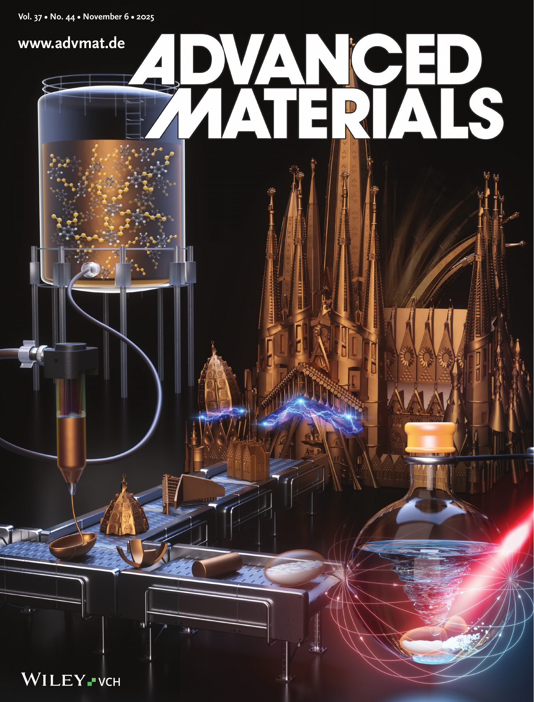
Closed-loop sustainable 4D printing
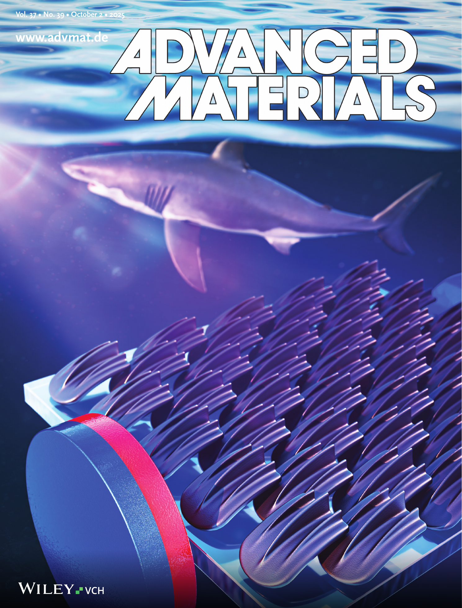
Light-fueled magnetic reconfiguration
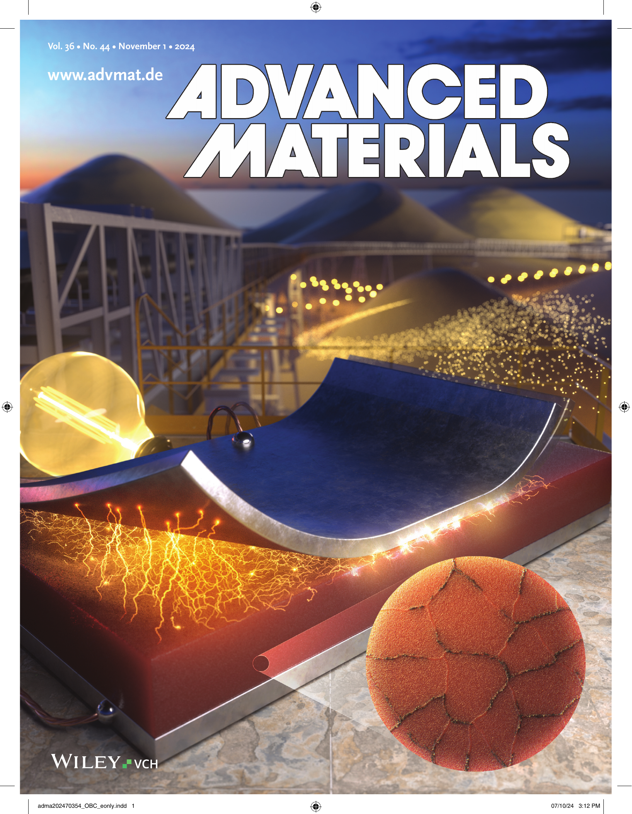
Sulfur-rich polymer/MXene TENG
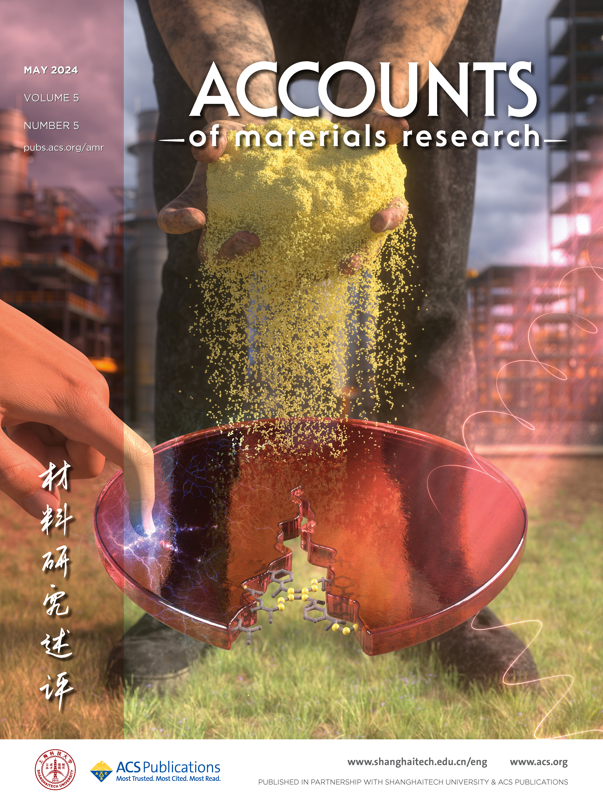
Waste-sulfur valorization
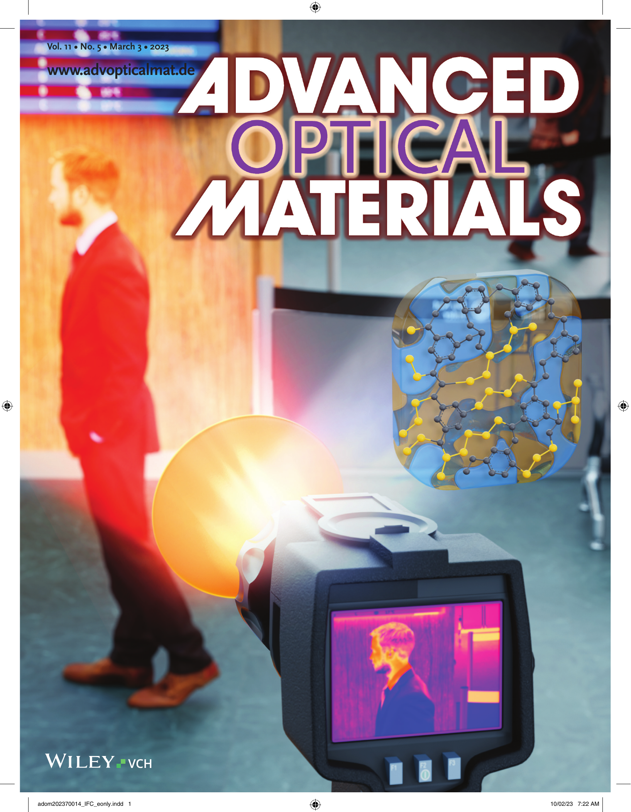
Sulfur-rich infrared optics
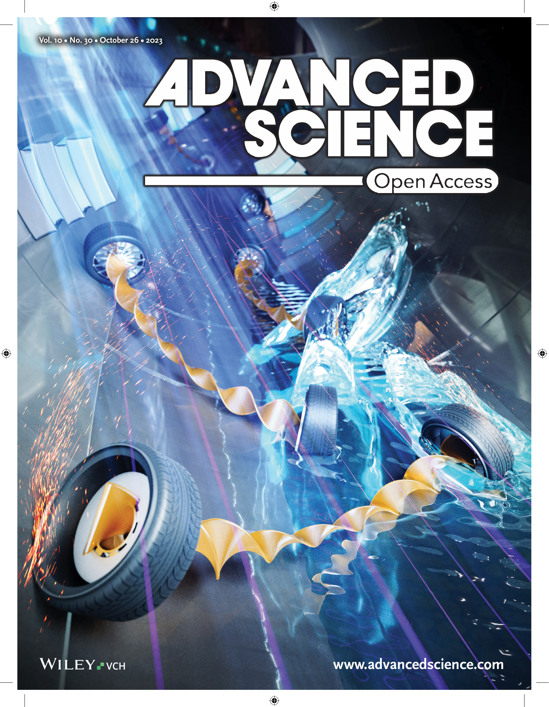
Light-fueled rolling locomotors
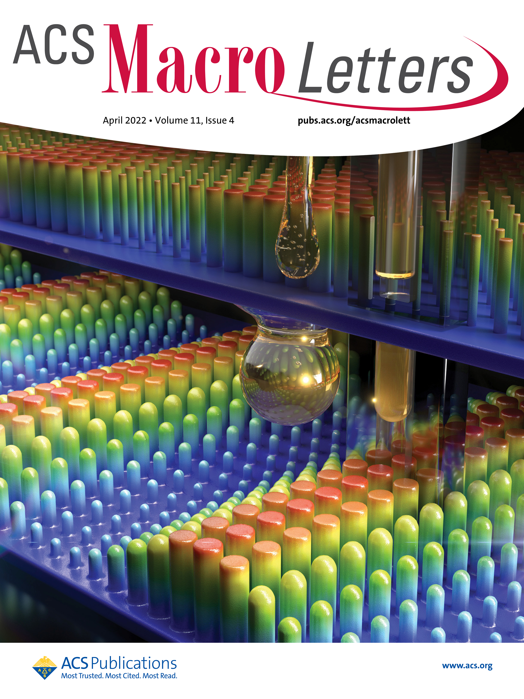
Height-tunable replica molding
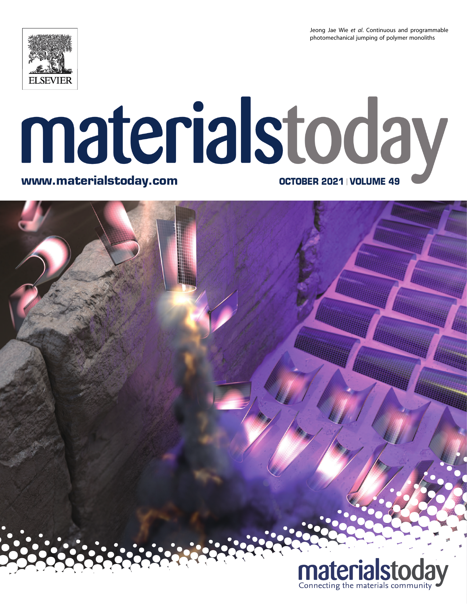
Photomechanical jumping monoliths
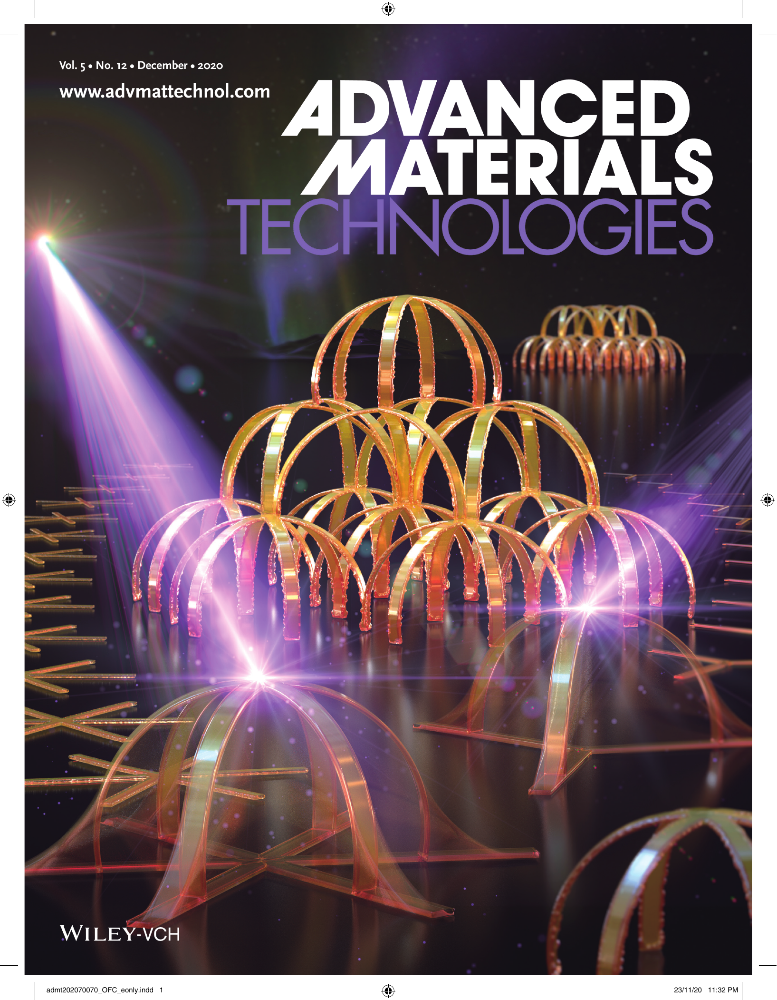
Programmable building blocks
M. J. Hahm, W. Cho, J. Jeon, K. Yang, and J. J. Wie*. ACS Applied Optical Materials 4, 962-974 (2026). Invited Spotlight article.
M. J. Hahm†, W. Cho†, J. Jeon, H.-R. Kim, T. Zhang, and J. J. Wie*. Science Advances 11, eadx8301 (2025). Co-first author.
Y. Yoon†, H. Moon†, W. Cho, D. Lee, S. Jeong*, J. J. Wie*, and C. B. Kim*. Advanced Materials 37, 2503161 (2025). Front cover article.
J. Molineux, S. W. Durfee, R. Hyde, M. C. Malaker, J. P. Narr, K.-J. Kim, R. Himmelhuber, Y.-J. Kim, M.-G. Bog, B. Jeong, W. Cho, J. J. Wie, N. B. Krishnan, Y. Y. Yang, R. A. Norwood*, and J. Pyun*. Advanced Functional Materials 35, 2422569 (2025).
C. Olikagu, S. Khoshsorour, S. D. Dulam, H.-S. Yu, N. A. Graham, K.-J. Kim, B. Jeong, J. L. Hedrick, A. Bunnag-Stoner, K. Cheng, B. L. Batchelor, W. Cho, S. B. Park, J. J. Wie, Y.-J. Kim, M.-G. Bog, N. B. Krishnan, Y. Y. Yang, J. T. Njardarson, R. A. Norwood*, and J. Pyun*. Advanced Materials 37, 2418149 (2025).
J. H. Hwang†, S. Won†, J. M. Lee, W. Cho, S. Park, H. Kim, C.-G. Chae, W. Lee, D.-G. Kim*, J. J. Wie*, and Y. S. Kim*. Advanced Materials 37, e07057 (2025). Front cover article.
W. Cho†, S. Kim†, H. Lee, N. Han, H. Kim, M. Lee*, T. H. Han*, and J. J. Wie*. Advanced Materials 36, 2404163 (2024). Co-first author; back cover article.
W. Cho, S. Kim, and J. J. Wie*. Accounts of Materials Research 5, 625-639 (2024). First author; invited review; supplementary cover article.
M. Zhang, S. Jeong, W. Cho, J. Ryu, B. Zhang, P. Crovella, A. J. Ragauskas, J. J. Wie*, and C. G. Yoo*. Chemical Engineering Journal 499, 156142 (2024).
H. Moon†, J. G. Lee†, W. Cho, J. Jeon, J. E. Park, and J. J. Wie*. Sensors and Actuators B: Chemical 402, 135092 (2024).
J. E. Park, H. Je, C. R. Kim, S. Park, Y. Yu, W. Cho, S. Won, D. J. Kang, T. H. Han, R. Kwak, S. G. Lee*, S. Kim*, and J. J. Wie*. Advanced Materials 36, 2309518 (2024).
W. Cho†, D. J. Kang†, M. J. Hahm, J. Jeon, D.-G. Kim, Y. S. Kim, T. H. Han*, and J. J. Wie*. Nano Energy 118, 108953 (2023). Co-first author.
H. Moon, J. E. Park, W. Cho, J. Jeon, and J. J. Wie*. European Polymer Journal 201, 112579 (2023).
J. H. Hwang†, S. H. Kim†, W. Cho†, W. Lee, S. Park, Y. S. Kim, J.-C. Lee, K. J. Lee*, J. J. Wie*, and D.-G. Kim*. Advanced Optical Materials 11, 2202432 (2023). Co-first author; inside front cover article.
W. Cho†, J. Hwang†, S. Y. Lee†, J. Park, N. Han, C. H. Lee, S.-W. Kang, A. Urbas, J. O. Kim, Z. Ku*, and J. J. Wie*. Advanced Materials 35, 2209377 (2023). Co-first author.
N. Han†, W. Cho†, J. H. Hwang, S. Won, D.-G. Kim*, and J. J. Wie*. Polymer Chemistry 14, 943-951 (2023). Co-first author; invited themed collection.
S. Jhang†, W. Cho†, S. K. Lee, A. R. Yu, J. G. Lee, K. Jung, Y. Pu, C. G. Yoo, and J. J. Wie*. Cellulose 30, 6917-6931 (2023). Co-first author.
J.-C. Choi, J. Jeon, J.-W. Lee, A. Nauman, J. G. Lee, W. Cho, C. Lee, Y.-M. Cho, J. J. Wie*, and H.-R. Kim*. Advanced Science 10, 2304715 (2023). Front cover article.
K. Lee†, J. Jeon†, W. Cho, S.-W. Kim, H. Moon, J. J. Wie*, and S. Lee*. Materials Today 55, 56-65 (2022).
J. Jeon, H. Choi, W. Cho, J. Hong, J. H. Youk*, and J. J. Wie*. ACS Macro Letters 11, 428-433 (2022). Supplementary cover article.
W. Cho†, J. Jeon†, W. Eom, J. G. Lee, D.-G. Kim, Y. S. Kim, T. H. Han*, and J. J. Wie*. Advanced Functional Materials 31, 2102106 (2021). Co-first author.
J. Jeon†, J.-C. Choi†, H. Lee, W. Cho, K. Lee, J. G. Kim, J.-W. Lee, K.-I. Joo, M. Cho*, H.-R. Kim*, and J. J. Wie*. Materials Today 49, 97-106 (2021). Inner cover article.
J. E. Park, S. Won, W. Cho, J. G. Kim, S. Jhang, J. G. Lee, and J. J. Wie*. Journal of Polymer Science 59, 1491-1517 (2021). Invited review.
W. Cho, D. Y. Hahm, J. H. Yim, J. H. Lee, Y. J. Lee, D.-G. Kim, Y. S. Kim, and J. J. Wie*. Advanced Materials Technologies 5, 2000758 (2020). First author; front cover article.
Granted and filed intellectual property related to sulfur-rich polymers, infrared optics, and magnetic microstructures.
News
Recognized with Wiley Top Viewed Article honors in Advanced Materials for the sulfur-rich polymer/MXene triboelectric nanogenerator paper.
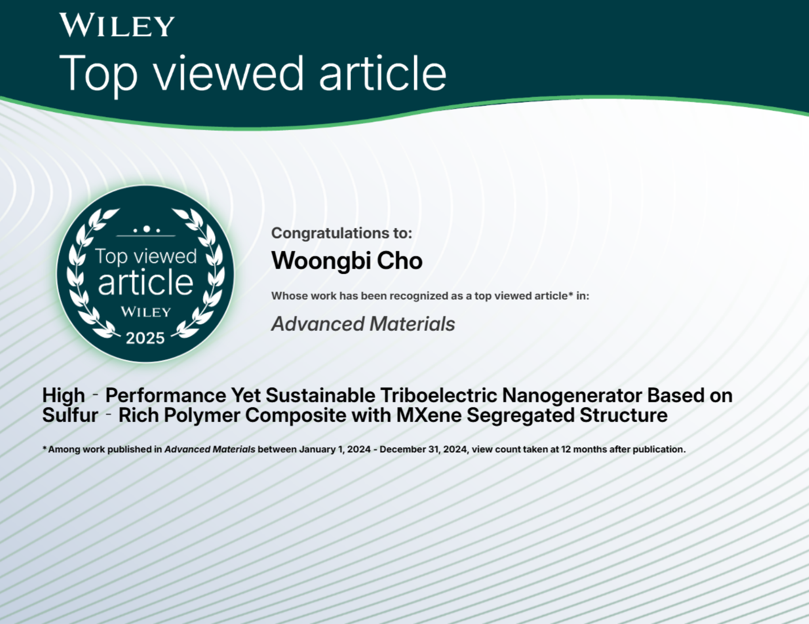
Joined Stanford University as a Postdoctoral Scholar in Mechanical Engineering in Prof. Ruike Renee Zhao's SIM Lab.
Received the Prof. Choi Sam Kwon Ph.D. Dissertation Award from the Polymer Society of Korea.
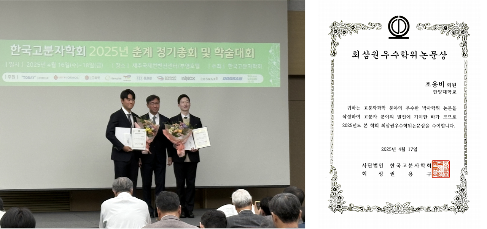
Received Hanyang University honors, including the Outstanding Research Achievement Award, Best Paper Award, and Outstanding Ph.D. Dissertation Award.
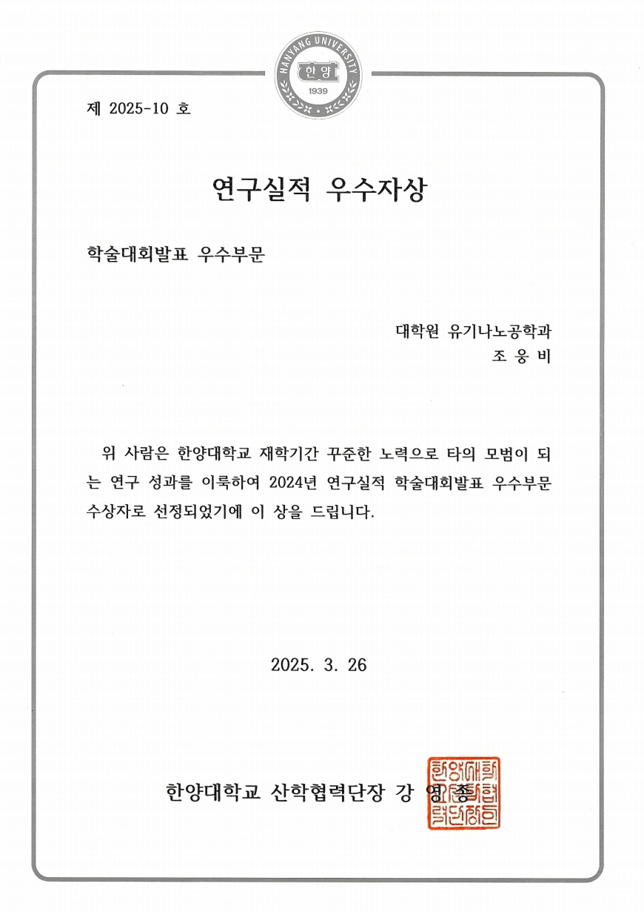
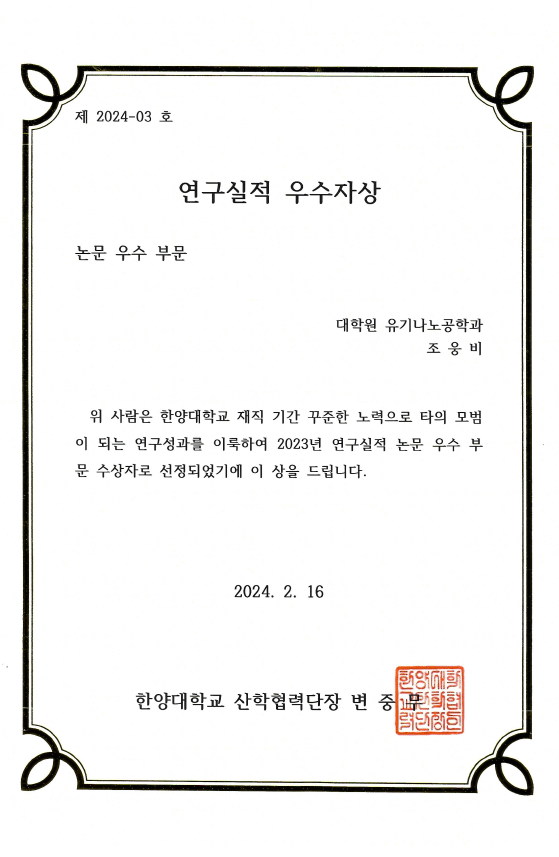
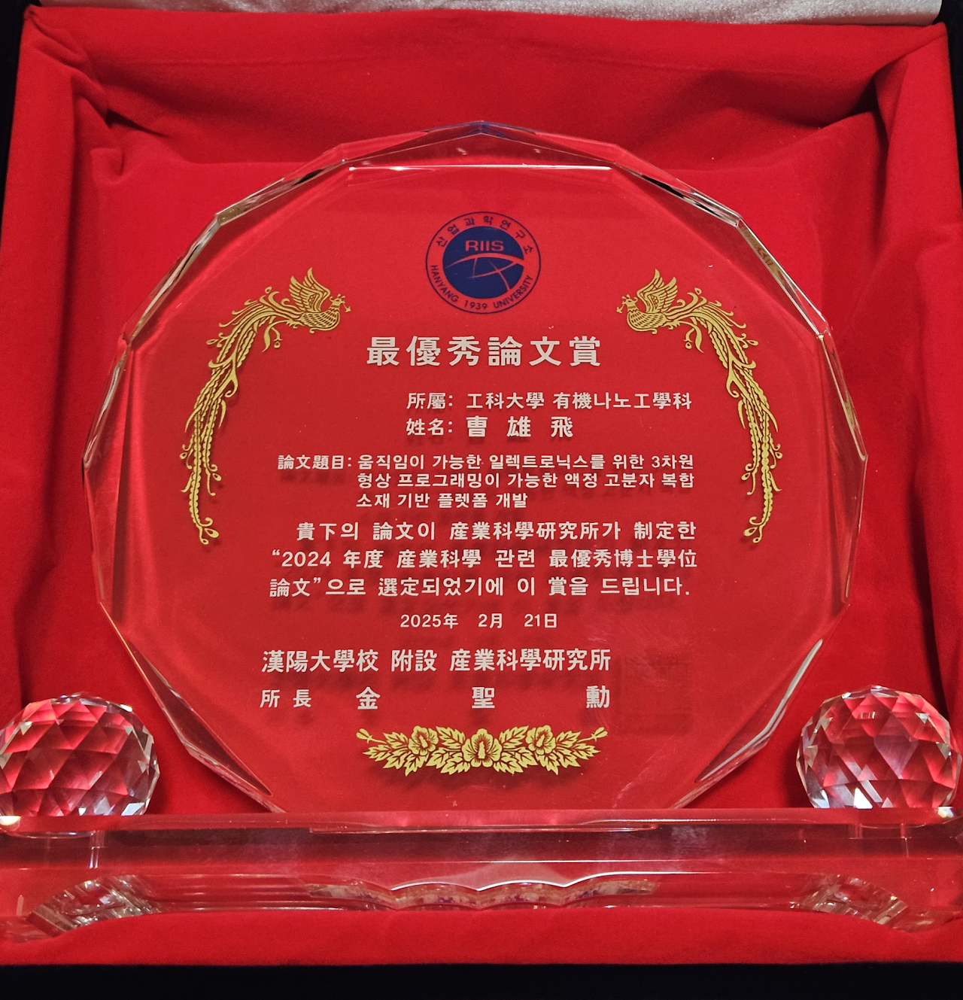
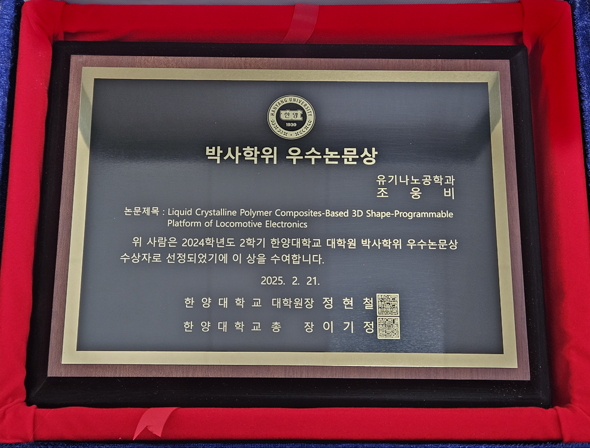
Contact